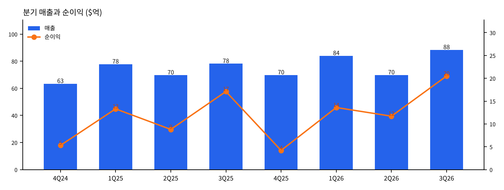
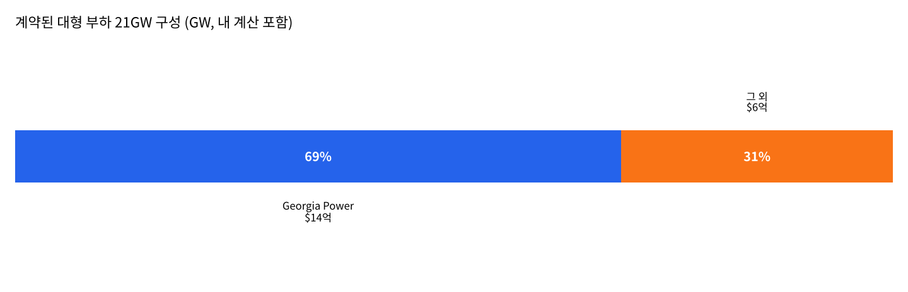
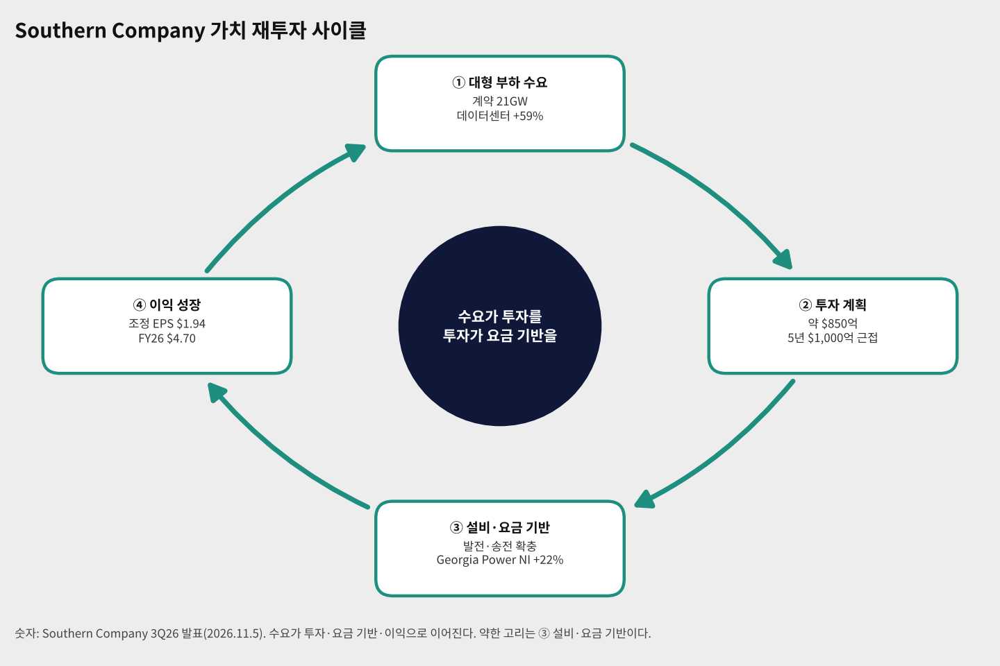

Southern은 정해진 요금으로 전력을 팔고, 설비 투자액에 대한 허용 수익을 받는다. 데이터센터 전력 수요가 투자와 이익을 함께 키운다.
| 항목 | 내용 |
|---|---|
| 종목 | Southern Company (SO) · NYSE · 전력·가스 유틸리티 · 조지아 애틀랜타 |
| 최근 분기(3Q26) | 매출 $88.43억, 조정 EPS $1.94 |
| 핵심 사업 | Georgia Power, Alabama Power, Southern Power, Nicor Gas |
| 직원 수 | 약 29,800명(트레이딩뷰) |
| 멀티플 | PER·PEG·P/S는 08~10 항목 표 참조 |
| 직책 | 인물 | 역할·특징 |
|---|---|---|
| 회장·CEO | 크리스 워맥(Chris Womack) | "수십 년 만에 가장 높은 판매 증가"라고 설명 |
| CFO | 데이비드 포로크(David Poroch) | 4Q 조정 EPS $0.30 추정 |
경영 스타일: 규제 + 대형 고객 계약. 발전·송전 투자를 키우되 대형 고객 보호 장치를 둔다.
가스·원자력·재생에너지 투자를 키워 데이터센터 수요를 맞춘다.
21GW 계약을 소화하는 발전·송전 설비를 지어 요금 기반을 키운다.
다음 실적발표는 세 가지 질문에 답하는 자리다.
1. 대형 부하 계약이 실제 사용량으로 이어지나?
2. 조지아 규제 환경이 바뀌나?
3. 투자 계획을 올리고 자금을 조달하나?
한 줄 판정 규칙: 첫 질문(대형 부하)이 사용량으로 이어지면 약한 고리인 ③ 규제 회수가 가장 큰 변수가 된다.
일정: 4Q26 실적 발표는 2027.02.18 예정(트레이딩뷰). 2027·2028 가이던스 상단 상향이 예상된다.
| 분기 | 매출 | 순이익 | EPS | 조정 EPS | 특이 사항 |
|---|---|---|---|---|---|
| 4Q24 | $63.4억 | $5.3억 | 0.48 | 0.50 | |
| 1Q25 | $77.8억 | $13.3억 | 1.21 | 1.23 | |
| 2Q25 | $69.7억 | $8.8억 | 0.79 | 0.92 | |
| 3Q25 | $78.2억 | $17.1억 | 1.54 | 1.60 | |
| 4Q25 | $69.8억 | $4.2억 | 0.37 | 0.55 | |
| 1Q26 | $84.0억 | $13.6억 | 1.20 | 1.32 | |
| 2Q26 | $69.8억 | $11.7억 | 1.03 | 1.13 | |
| 3Q26 | $88.4억 | $20.5억 | 1.76 | 1.94 | 데이터센터 사용량 +59%, 연간 가이던스 상향 |
매출은 트레이딩뷰 스캐너의 분기 총매출이라 회사가 발표한 순매출과 다를 수 있다. 조정 EPS는 풍력 교체·부채 상환·Nicor Gas 투자 관련 항목을 뺀 값이다. 매출·순이익·EPS(GAAP 희석)는 트레이딩뷰 스캐너, 조정 EPS는 트레이딩뷰 실적 페이지의 Reported 값이다. 분기 정렬은 오래된 분기→최신이다.

흐름 요약: 최근 분기 매출은 $88.4억로 전년 동기 $78.2억 대비 +13.0%, 순이익은 $20.5억(전년 $17.1억)다. 최근 4분기 GAAP EPS는 $4.36, 조정 EPS는 $4.94다.
| 항목 | 내용 | 계약 규모(GW) | 비고 |
|---|---|---|---|
| Georgia Power | 대형 부하 계약 | 14.5GW | 회사 발표 |
| 그 외(내 계산) | Alabama Power 등 | 6.5GW | 총 21GW에서 뺀 값 |

대형 부하 계약의 약 70%가 Georgia Power다.
Southern Company는 안정적이고 합리적인 가격의 전력을 공급하는 것을 목표로 한다.
| 축 | 내용 |
|---|---|
| 수요 | 대형 부하 21GW |
| 투자 | 약 $850억(계획) |
| 이익 | FY26 조정 EPS $4.70 |

| 이동평균 | 값 | 종가 대비 | 위치 |
|---|---|---|---|
| 5일선 | $93.98 | -0.3% | 종가 아래 |
| 20일선 | $93.35 | +0.3% | 종가 위 |
| 50일선 | $89.15 | +5.1% | 종가 위 |
| 100일선 | $91.02 | +2.9% | 종가 위 |
| 200일선 | $92.77 | +1.0% | 종가 위 |
52주 고가 $99.58(2026-03-17)·저가 $81.69(2026-09-29) 범위에서 종가 $93.66는 20일선, 50일선, 100일선, 200일선을 웃돌고 5일선은 밑돈다.
| 규칙 | 기준 | 현재 값 | 신호 |
|---|---|---|---|
| 장기 추세 필터 | 종가 vs 200일선 | $93.66 > $92.77 | 매수 |
| 중장기 교차 | 50일선 vs 200일선 | $89.15 < $92.77 | 매도 |
| 단기 교차 | 20일선 vs 50일선 | $93.35 > $89.15 | 매수 |
| 돈키언 채널 | 55일 고가 $95.72 / 저가 $81.69 | 중간값 $88.70 위 | 매수 |
| 1개월 모멘텀 | 21거래일 수익률 | +3.6% (기준 $90.39) | 매수 |
| 3개월 모멘텀 | 63거래일 수익률 | +5.3% (기준 $88.94) | 매수 |
| 6개월 모멘텀 | 126거래일 수익률 | -0.6% (기준 $94.24) | 매도 |
| 12개월 모멘텀 | 252거래일 수익률 | +3.3% (기준 $90.69) | 매수 |
| 종합 (8개 평균) | +0.50 | 매수 |
해석: 매수 신호 6개(장기 추세 필터, 단기 교차, 돈키언 채널, 1개월 모멘텀, 3개월 모멘텀, 12개월 모멘텀), 매도 신호 2개(중장기 교차, 6개월 모멘텀). CTA 점수 +0.50(매수). 14일 ATR $2.01 (2.1%), 52주 고가 $99.58 · 저가 $81.69.
| 가격 | 기준 | 무엇이 바뀌나 |
|---|---|---|
| $95.72 | 55일 고가 | 돌파 시 채널 상단 갱신 |
| $94.24 | 6개월 모멘텀 기준가 | 종가가 이 가격 위면 6개월 신호 매수 |
| $92.77 | 200일선 | 종가가 이 선 위/아래인지로 장기 추세 신호가 바뀜 |
| $90.69 | 12개월 모멘텀 기준가 | 종가가 이 가격 위면 12개월 신호 매수 |
| $90.39 | 1개월 모멘텀 기준가 | 종가가 이 가격 위면 1개월 신호 매수 |
| $88.94 | 3개월 모멘텀 기준가 | 종가가 이 가격 위면 3개월 신호 매수 |
| $88.70 | 돈키언 중간값 | 55일 채널 중간값 위/아래로 신호가 바뀜 |
| $81.69 | 55일 저가 | 이탈 시 채널 하단 갱신 |
가격 수준은 신호가 바뀌는 기준선일 뿐 진입·청산 가격 제안이 아니다. 20일/50일 교차는 이동평균 자체가 움직여 단일 가격으로 표시하지 않았다. 일봉·주봉은 종가 기준 직접 계산(고저 데이터 미사용)이다.
| 악재 요인 | 내용 | 강도 |
|---|---|---|
| 규제 불확실성 | 조지아 규제 위원회 변화·데이터센터 제한 가능성 | 중간 |
| 주식 희석 | 투자 확대를 위한 주식 발행 | 중간 |
| 요금 부담 | 고객 요금 인상 정치 부담 | 참고 |
| 티커 | 회사 | PER(TTM) | PEG | P/S | EPS 성장(YoY) |
|---|---|---|---|---|---|
| SO | Southern Company | 19.0배 | 1.17 | 3.49배 | +16% |
| DUK | Duke Energy | 18.8배 | 2.49 | 3.00배 | +8% |
| NEE | NextEra Energy | 15.3배 | 0.20 | 6.06배 | +76% |
| AEP | American Electric Power | 20.7배 | – | 2.95배 | -10% |
| D | Dominion Energy | 22.1배 | 8.64 | 3.03배 | +3% |
비교 결론: Southern의 PER 19.0배는 Duke Energy·NextEra보다 높고 American Electric Power·Dominion보다 낮다. PEG 1.17는 Duke Energy(2.49)·Dominion(8.64)보다 낮고 NextEra(0.20)보다 높다.
현금·부채는 트레이딩뷰 스캐너 값이다. 유틸리티라 부채가 매우 크다.
| 지표 | 값 | 출처 | 해석 |
|---|---|---|---|
| 현금·단기투자 | $17억 | 트레이딩뷰 스캐너(최근 분기) | |
| 총부채 | $755억 | 트레이딩뷰 스캐너(최근 분기) | |
| 순부채(부채−현금) | $738억 | 내 계산 | 현금 대비 부채 부담 |
| 잉여현금흐름(TTM) | $-47억 | 트레이딩뷰 스캐너 | |
| TTM 매출 | $312억 | 트레이딩뷰 스캐너 |
| 기준 | 매출 | P/S | 비고 |
|---|---|---|---|
| 내 계산(종가 ÷ 최근 4분기 매출 합계) | $312.0억 | 3.49배 | 시총은 정렬용 데이터에서만 사용 |
| 동종(트레이딩뷰) | – | DUK 3.00배 · NEE 6.06배 · AEP 2.95배 · D 3.03배 | 11.19 |
해석: 투자 확대로 부채와 주식 발행이 함께 늘어난다. 허용 수익으로 부채를 감당하는 구조다(내 해석).
EBITDA는 영업활동의 현금 창출력을 보는 지표이고, PEG는 PER을 EPS 성장률로 나눈 값이다. EBITDA·FCF는 트레이딩뷰 TTM 값이다.
| 지표 | 값 | 산출 |
|---|---|---|
| EBITDA(TTM) | $141억 | 트레이딩뷰 스캐너 |
| EBITDA 마진 | 45.2% | EBITDA ÷ TTM 매출(내 계산) |
| FCF 마진 | -15.1% | FCF ÷ TTM 매출(내 계산) |
| PER(GAAP TTM) | 21.5배 | $93.66 ÷ $4.36 |
| PER(조정 TTM) | 19.0배 | $93.66 ÷ $4.94 |
| 방식 | PER | EPS 성장률 | PEG | 판정 |
|---|---|---|---|---|
| 조정 EPS (TTM $4.94) | 19.0배 | +16% ($4.25 → $4.94) | 1.17 | 기준 초과 |
| GAAP EPS (TTM $4.36) | 21.5배 | +8% ($4.02 → $4.36) | 2.54 | 기준 초과 |
판정: 조정 EPS 기준 PEG 1.17 → 1.0 초과 PEG 기준은 1.0 이하 투자 적격, 0.5 이하 적극 매수다. EPS 성장률은 최근 4분기 EPS 합계를 직전 4분기 합계와 비교한 값(내 계산)이고, 일회성 항목이 있으면 조정 EPS 행을 함께 본다.

Southern Company의 사이클: 수요가 투자를 부르고 투자가 요금 기반과 이익을 키우며, 늘어난 이익이 다시 투자 여력이 되는 순환이다.
| 고리 | 현재 숫자·근거 |
|---|---|
| ① 대형 부하 수요 | 계약 21GW(Georgia Power 14.5GW) · 데이터센터 사용량 +59% |
| ② 투자 계획 | 투자 계획 약 $850억 · 5년 계획 $1,000억 근접 가능 |
| ③ 설비·요금 기반 | Georgia Power 순이익 $15.2억(+22%) |
| ④ 이익 성장 | 조정 EPS $1.94(+21.3%) · FY26 $4.70 |
사이클의 특징: 약한 고리는 ③ 설비·요금 기반이다(조지아 규제 변화가 회수에 영향). "(내 해석)"은 보고서 수치가 아닌 해석이다.